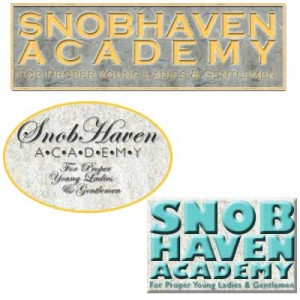

<?xml version="1.0" encoding="UTF-8"?><rss version="2.0"
	xmlns:content="http://purl.org/rss/1.0/modules/content/"
	xmlns:wfw="http://wellformedweb.org/CommentAPI/"
	xmlns:dc="http://purl.org/dc/elements/1.1/"
	xmlns:atom="http://www.w3.org/2005/Atom"
	xmlns:sy="http://purl.org/rss/1.0/modules/syndication/"
	xmlns:slash="http://purl.org/rss/1.0/modules/slash/"
	>

<channel>
	<title>Mr. Machtay</title>
	<atom:link href="http://galileoweb.org/machtayh/feed/" rel="self" type="application/rss+xml" />
	<link>http://galileoweb.org/machtayh</link>
	<description>It’s About Communication</description>
	<lastBuildDate>Thu, 29 Oct 2015 16:29:53 +0000</lastBuildDate>
	<language>en-US</language>
	<sy:updatePeriod>hourly</sy:updatePeriod>
	<sy:updateFrequency>1</sy:updateFrequency>
	
	<item>
		<title>Functional Design: Flags &#038; Money</title>
		<link>http://galileoweb.org/machtayh/2015/10/25/flags-money/</link>
		<comments>http://galileoweb.org/machtayh/2015/10/25/flags-money/#comments</comments>
		<pubDate>Sun, 25 Oct 2015 20:57:48 +0000</pubDate>
		<dc:creator><![CDATA[machtayh]]></dc:creator>
				<category><![CDATA[Computer Art 1]]></category>

		<guid isPermaLink="false">http://galileoweb.org/machtayh/?p=1065</guid>
		<description><![CDATA[This week is about FUNCTIONAL design. If you design (and produce) a spoon or a table or a shirt, your finished product has a FUNCTION. Also, you must consider how the raw materials FUNCTION. (Raw Materials examples: spoon = metal; chair = wood; shirt = fabric) FIRST: CREATE YOUR OWN COUNTRY Is your country on an island? Are there beaches?]]></description>
				<content:encoded><![CDATA[<h4><span style="color: #993366;">This week is about FUNCTIONAL design. </span></h4>
<p>If you design (and produce) a spoon or a table or a shirt, your finished product has a FUNCTION. Also, you must consider how the raw materials FUNCTION. (Raw Materials examples: spoon = metal; chair = wood; shirt = fabric)</p>
<h4><strong>FIRST: CREATE YOUR OWN COUNTRY</strong></h4>
<p>Is your country on an island? Are there beaches? Mountains? Big Cities? Are you the president? The king? You could decide you want California to break off and become its own country. Or maybe San Francisco should declare itself a country?  Have fun with this.</p>
<h4><strong><a href="../wp-content/uploads/sites/7/2015/10/2machtayflag.gif"></a>FLAG (300px ht x 600px w, saved as a GIF)</strong></h4>
<p>Flags are most often made from fabric. Therefore, plan a design that is simple geometric shapes (that could be cut out and sewn together in fabric). Choose colors and shapes that represent your country.</p>
<p>Make sure your design could be produced in fabric! No pictures. No gradients. No drop shadows. Just SOLID GEOMETRIC SHAPES!</p>
<p>Your flag could be very simple — look at the flags of Japan, or Norway, or Ireland. But, if you&#8217;re going to make a design that&#8217;s a simple &#8220;X&#8221; make sure the X is perfectly centered and even spacing in all four corners. If you&#8217;re going to design a flag that has three horizontal lines, make sure the lines are the same size.</p>
<p>You can make the flag simple, but make it carefully so it&#8217;s precise and neat.</p>
<h4><strong>PAPER MONEY </strong></h4>
<p>The #1 priority for paper money printed by countries today is STOPPING COUNTERFEITERS. This means using intricate patterns that overlap. When you look closely at the background you can often see layers of images.</p>
<p>Choose colors that represent your country. Repeat colors and shapes that you used on your flag.</p>
<h4><strong><a href="../wp-content/uploads/sites/7/2015/10/3machtaymoney.jpg"></a>FRONT OF MONEY (300px ht x 600px w, saved as a JPG)</strong></h4>
<p>Use a face on the front of your money — photograph or painting (do not use a cartoon or drawing). Apply a filter to the picture.</p>
<p>Place the value of the money in at least 2 corners of the money (preferably in all 4). Make sure the value is easy to read.</p>
<p>In a smaller typeface write the name of your country (full legal name).</p>
<p>For the background, use multiple layers (lower opacity on the upper layers so they&#8217;re see-through). Mr. Machtay will demonstrate how to use Dingbats effectively and how to change Opacity on layers. Make the background intricate and difficult to counterfeit. Also use symbols as ornaments (behind a picture, behind the amount of the money).</p>
<h4><strong>BACK OF MONEY <strong>(300px ht x 600px w, saved as a JPG)</strong></strong></h4>
<p>Use a picture of a building or a landscape — once again, not a cartoon or a drawing. Once again apply a filter.</p>
<p>Place the value of the money the same as you did on the front.</p>
<p>Make a different background for the back of the money. But make sure you&#8217;re using the same/similar imagery and shapes, and keeping with your country&#8217;s colors.</p>
<p>&nbsp;</p>
<p>&nbsp;</p>
]]></content:encoded>
			<wfw:commentRss>http://galileoweb.org/machtayh/2015/10/25/flags-money/feed/</wfw:commentRss>
		<slash:comments>0</slash:comments>
		</item>
		<item>
		<title>Proposal for Video Project</title>
		<link>http://galileoweb.org/machtayh/2015/10/25/proposal-for-video-project/</link>
		<comments>http://galileoweb.org/machtayh/2015/10/25/proposal-for-video-project/#comments</comments>
		<pubDate>Sun, 25 Oct 2015 12:46:23 +0000</pubDate>
		<dc:creator><![CDATA[machtayh]]></dc:creator>
				<category><![CDATA[Intro to Video]]></category>
		<category><![CDATA[POV: Video Production]]></category>

		<guid isPermaLink="false">http://galileoweb.org/machtayh/?p=517</guid>
		<description><![CDATA[You will write a 1-page Proposal for a Video Project and hand it in by Thursday September 11th. PROPOSAL FOR DOCUMENTARY (non-fiction): TOPIC: What is the subject of the video? QUESTION/CONFLICT: What question will you be exploring? Or what conflict will you be explaining? WHO TO INTERVIEW: What people (or groups) will be interviewed to help tell your story? WHAT]]></description>
				<content:encoded><![CDATA[<p><strong>You will write a 1-page Proposal for a Video Project and hand it in by Thursday September 11th.</strong></p>
<p><strong>PROPOSAL FOR DOCUMENTARY (non-fiction):</strong></p>
<ol>
<li>TOPIC: What is the subject of the video?</li>
<li>QUESTION/CONFLICT: What question will you be exploring? Or what conflict will you be explaining?</li>
<li>WHO TO INTERVIEW: What people (or groups) will be interviewed to help tell your story?</li>
<li>WHAT QUESTIONS: List the questions you will ask these interviewees. Make sure they are active questions.</li>
<li>WHAT SCENES: What locations or things or activities will you be videotaping?</li>
<li>OUTLINE: Describe each sequence in order from beginning to end</li>
</ol>
<p><strong>PROPOSAL FOR FICTION VIDEO:</strong></p>
<ol>
<li>SUBJECT: What is it about?</li>
<li>CHARACTERS: List and describe the characters</li>
<li>CONFLICT: What is the dramatic tension? who vs what?</li>
<li>RESOLUTION: How does the dramatic tension resolve? The conclusion? The climax?</li>
<li>OUTLINE: List the sequences/scenes</li>
</ol>
<p><strong>NOTE:</strong> Each student is required to hand in a proposal. Students who are most enthusiastic about turning their proposals into finished videos will have an opportunity to form teams the first week of Spring semester.</p>
]]></content:encoded>
			<wfw:commentRss>http://galileoweb.org/machtayh/2015/10/25/proposal-for-video-project/feed/</wfw:commentRss>
		<slash:comments>0</slash:comments>
		</item>
		<item>
		<title>Guidelines for &#8220;Create with Purpose&#8221; Video Projects</title>
		<link>http://galileoweb.org/machtayh/2015/10/24/guidelines-for-create-with-purpose-video-projects/</link>
		<comments>http://galileoweb.org/machtayh/2015/10/24/guidelines-for-create-with-purpose-video-projects/#comments</comments>
		<pubDate>Sat, 24 Oct 2015 12:35:36 +0000</pubDate>
		<dc:creator><![CDATA[machtayh]]></dc:creator>
				<category><![CDATA[Intro to Video]]></category>
		<category><![CDATA[POV: Video Production]]></category>

		<guid isPermaLink="false">http://galileoweb.org/machtayh/?p=752</guid>
		<description><![CDATA[The Video Project must… HAVE MEANING: It should address an issue or concern. Viewers should be informed, educated or made aware of something, or – best of all – motivated to action because of your video. This doesn’t mean you have to hit people over the head with a message, and it doesn’t mean your video needs to be deadly]]></description>
				<content:encoded><![CDATA[<p>The Video Project must…</p>
<p><strong>HAVE MEANING:</strong> It should address an issue or concern. Viewers should be informed, educated or made aware of something, or – best of all – motivated to action because of your video. This doesn’t mean you have to hit people over the head with a message, and it doesn’t mean your video needs to be deadly serious. EXAMPLE: “A Girl Like Me” informed and educated; I didn’t know that African-American girls felt unattractive because of their skin color or hair texture.</p>
<p><strong>HAVE PASSION:</strong> The leader of the team should promote a topic that she/he feels passionate about. Other than making video what do you care about? EXAMPLE: Different students may be passionate about abandoned pets, or adding bike lanes to Polk Street, or preparing for a Robotics Competition.</p>
<p><strong>USE ONLY COPYRIGHT-FREE MATERIAL:</strong> Do not choose topics that would require use of copyrighted music or images or video. You can make use of work from Creative Commons (with proper attribution). EXAMPLE: This is why local topics are usually preferable to international issues. If you need B-roll of the crisis in Syria, it will likely be someone else’s copyrighted photos or video.</p>
<p><strong>BE LARGE ENOUGH:</strong> Is the plan for your video big enough to warrant having 3 or 4 students work for two months? EXAMPLE: You could videotape the Chinese New Year Parade and edit it in one or two weeks. How can you expand this project beyond just showing the parade?</p>
<p><strong>PRESENT CHALLENGES:</strong> You can request interviews with school board members or members of the board of supervisors. Most people are friendly and open to being interviewed by a video crew of high school students, even if you approach strangers on the street.  You may feel intimidated doing things like this – that’s all the more reason to do it! Challenge yourself and grow!</p>
]]></content:encoded>
			<wfw:commentRss>http://galileoweb.org/machtayh/2015/10/24/guidelines-for-create-with-purpose-video-projects/feed/</wfw:commentRss>
		<slash:comments>0</slash:comments>
		</item>
		<item>
		<title>Personal Portfolio Video</title>
		<link>http://galileoweb.org/machtayh/2015/10/23/personal-portfolio-video-2/</link>
		<comments>http://galileoweb.org/machtayh/2015/10/23/personal-portfolio-video-2/#comments</comments>
		<pubDate>Fri, 23 Oct 2015 22:34:54 +0000</pubDate>
		<dc:creator><![CDATA[machtayh]]></dc:creator>
				<category><![CDATA[POV: Video Production]]></category>

		<guid isPermaLink="false">http://galileoweb.org/machtayh/?p=1696</guid>
		<description><![CDATA[Each student will make their own Personal Portfolio Video (PPV). Work together with your classmates. If someone else in the class videotapes for your PPV, then you videotape for that student&#8217;s PPV. Share one computer with classmates. Start collecting footage and still photos. Do you play a sport? Get images of you at practice. Do you play a musical instrument?]]></description>
				<content:encoded><![CDATA[<p>Each student will make their own Personal Portfolio Video (PPV).</p>
<ul>
<li>Work together with your classmates. If someone else in the class videotapes for your PPV, then you videotape for that student&#8217;s PPV. Share one computer with classmates.</li>
<li>Start collecting footage and still photos. Do you play a sport? Get images of you at practice. Do you play a musical instrument? Get footage of you playing. Do you love skateboarding? Get it on camera.</li>
<li>Answer the following questions:</li>
</ul>
<ol>
<li>What are your interests/passions?</li>
<li>What have you learned being part of the Media Arts Pathway?</li>
<li>What are you proud of?</li>
<li>What are your goals for the future?</li>
</ol>
<p>&nbsp;</p>
<p>&nbsp;</p>
]]></content:encoded>
			<wfw:commentRss>http://galileoweb.org/machtayh/2015/10/23/personal-portfolio-video-2/feed/</wfw:commentRss>
		<slash:comments>0</slash:comments>
		</item>
		<item>
		<title>I feel connected to Galileo because of&#8230;</title>
		<link>http://galileoweb.org/machtayh/2015/10/22/i-feel-connected-to-galileo-because-of-2/</link>
		<comments>http://galileoweb.org/machtayh/2015/10/22/i-feel-connected-to-galileo-because-of-2/#comments</comments>
		<pubDate>Thu, 22 Oct 2015 15:43:14 +0000</pubDate>
		<dc:creator><![CDATA[machtayh]]></dc:creator>
				<category><![CDATA[Intro to Video]]></category>

		<guid isPermaLink="false">http://galileoweb.org/machtayh/?p=1694</guid>
		<description><![CDATA[Each team will make a video, 1-2 minutes long, on the topic &#8220;I feel connected to Galileo because of&#8230;.&#8221; Choose one Galileo student. Have that student tell the story of something at this school that makes her/him feel connected. Maybe the student is part of the Futurama DJ Club. Maybe the student plays violin in the school orchestra. Maybe the]]></description>
				<content:encoded><![CDATA[<p>Each team will make a video, 1-2 minutes long, on the topic &#8220;I feel connected to Galileo because of&#8230;.&#8221;</p>
<p>Choose one Galileo student. Have that student tell the story of something at this school that makes her/him feel connected. Maybe the student is part of the Futurama DJ Club. Maybe the student plays violin in the school orchestra. Maybe the student&#8217;s connection to Galileo is through JROTC or the Hospitality &amp; Tourism program. Maybe the student feels connected to Galileo because she eats lunch with her friends in Ms. Morrison&#8217;s classroom every day.</p>
<p>Record the student&#8217;s voice over.</p>
<p>Then get footage to illustrate what the student is talking about.</p>
<p>Completed videos due at the end of class Tuesday, October 27th.</p>
<p>&nbsp;</p>
]]></content:encoded>
			<wfw:commentRss>http://galileoweb.org/machtayh/2015/10/22/i-feel-connected-to-galileo-because-of-2/feed/</wfw:commentRss>
		<slash:comments>0</slash:comments>
		</item>
		<item>
		<title>Entomophagy!</title>
		<link>http://galileoweb.org/machtayh/2015/10/19/entomophagy/</link>
		<comments>http://galileoweb.org/machtayh/2015/10/19/entomophagy/#comments</comments>
		<pubDate>Mon, 19 Oct 2015 16:34:35 +0000</pubDate>
		<dc:creator><![CDATA[machtayh]]></dc:creator>
				<category><![CDATA[Computer Art 1]]></category>

		<guid isPermaLink="false">http://galileoweb.org/machtayh/?p=1691</guid>
		<description><![CDATA[You will create a folder called 2lastnameinsects. This will be a multi-part project and you will place all JPGs from this assignment into your 2lastnameinsects folder. THE ASSIGNMENT 80% of cultures around the world eat insects. But most Western countries do not. Some believe that the solution to world hunger is using insects as a source of food. So, how would you]]></description>
				<content:encoded><![CDATA[<p>You will create a folder called 2lastnameinsects.</p>
<p>This will be a multi-part project and you will place all JPGs from this assignment into your 2lastnameinsects folder.</p>
<h5>THE ASSIGNMENT</h5>
<p>80% of cultures around the world eat insects. But most Western countries do not. Some believe that the solution to world hunger is using insects as a source of food.</p>
<p>So, how would you market food made from insects to appeal to American teenagers? Come up with a product and a name.</p>
<h5>THE LOGO</h5>
<p>The first part of this project, you will create 3 Logos for your product. Each logo will be 400px X 400px, saved as JPG.</p>
<p>Mr. Machtay will review with the class: What makes a good logo? There should not be a lot of extra space between lines of type. Group things together so that you create a design out of the lettering.</p>
<p>What colors and what typefaces will you select to represent your product? What designs will appeal to a teen audience?</p>
<p>Most logos don&#8217;t have pictures. They may have simple shapes that represent the product or emphasize the letters in the name. Consider logos on products that you like.</p>
<h5>THE ADVERTISEMENTS</h5>
<p>Mr. Machtay will review your 3 logos and help you select one to use in your advertisements. The class will look at some print advertisements and consider what makes some ads more effective than others (especially in appealing to teens).</p>
<p>Each ad is 400px W x 600px Ht, saved as JPG, and has:</p>
<ul>
<li>PICTURE(s) — it could be one or more pictures. It may show the product, but more important it should show how the product makes people feel (happy?).</li>
<li>LOGO — depending on the ad design, the logo could be large or small. But it should be clear and readable.</li>
<li>SLOGAN — &#8220;Coke, it&#8217;s the real thing.&#8221; &#8220;Apple, think different.&#8221; &#8220;Burger King, have it your way.&#8221; Find a short, catchy slogan for your product.</li>
<li>ADDITIONAL WORDS — Do you need to add some more words to help communicate your vision of the product? To help convince people to buy and eat this product?</li>
<li>&#8230; And don&#8217;t forget: PRINCIPLES OF GOOD LAYOUT! Grouping, Alignment, Repetition, Variety, Balance.</li>
</ul>
<p>&nbsp;</p>
<p>&nbsp;</p>
]]></content:encoded>
			<wfw:commentRss>http://galileoweb.org/machtayh/2015/10/19/entomophagy/feed/</wfw:commentRss>
		<slash:comments>0</slash:comments>
		</item>
		<item>
		<title>Aristotle&#8217;s Poetics/Test</title>
		<link>http://galileoweb.org/machtayh/2015/10/13/aristotles-poeticstest/</link>
		<comments>http://galileoweb.org/machtayh/2015/10/13/aristotles-poeticstest/#comments</comments>
		<pubDate>Tue, 13 Oct 2015 15:07:40 +0000</pubDate>
		<dc:creator><![CDATA[machtayh]]></dc:creator>
				<category><![CDATA[Intro to Video]]></category>

		<guid isPermaLink="false">http://galileoweb.org/machtayh/?p=1677</guid>
		<description><![CDATA[There are two written assignments and a test that will count as one &#8220;assignment&#8221; for the second marking period grade. VISIONS OF LIGHT Those students who did not go on the field trip watched the movie &#8220;Visions of Light.&#8221; You were asked to write about two things you learned from this movie. Very few of you handed this in. ARISTOTLE]]></description>
				<content:encoded><![CDATA[<p>There are two written assignments and a test that will count as one &#8220;assignment&#8221; for the second marking period grade.</p>
<h4>VISIONS OF LIGHT</h4>
<p>Those students who did not go on the field trip watched the movie &#8220;Visions of Light.&#8221; You were asked to write about two things you learned from this movie. Very few of you handed this in.</p>
<h4>ARISTOTLE &amp; THE MOVIES</h4>
<p>You learned about Aristotle&#8217;s Poetics and his principles of drama. You were asked to write about a movie you like and describe:</p>
<ul>
<li>How is the beginning something &#8220;you don&#8217;t need anything before this.&#8221;</li>
<li>How is the end something &#8220;you don&#8217;t need anything after this.&#8221;</li>
<li>Who/what is the protagonist.</li>
<li>Who/what is the antagonist.</li>
</ul>
<h4>WRITTEN TEST</h4>
<p>The written test will have essay questions about principles of editing you learned from the movie &#8220;The Cutting Edge.&#8221; Plus there will be some short answer questions about using Premiere Pro and the video equipment.</p>
<p>EDITING PRINCIPLES ON TEST</p>
<p>You should be able to explain the following:</p>
<ul>
<li>Parallel Action (Edwin S. Porter)</li>
<li>Invisible Edit (D.W. Griffith)</li>
<li>Montage (Russian — Kuleshov, Eisenstein)</li>
<li>Classic Hollywood Edit (studio system, America 1930&#8217;s/40&#8217;s)</li>
<li>New Wave (France &amp; USA)</li>
</ul>
<p>&nbsp;</p>
]]></content:encoded>
			<wfw:commentRss>http://galileoweb.org/machtayh/2015/10/13/aristotles-poeticstest/feed/</wfw:commentRss>
		<slash:comments>0</slash:comments>
		</item>
		<item>
		<title>Branding with Type/Schools</title>
		<link>http://galileoweb.org/machtayh/2015/10/09/using-type-for-branding/</link>
		<comments>http://galileoweb.org/machtayh/2015/10/09/using-type-for-branding/#comments</comments>
		<pubDate>Fri, 09 Oct 2015 12:38:02 +0000</pubDate>
		<dc:creator><![CDATA[machtayh]]></dc:creator>
				<category><![CDATA[Computer Art 1]]></category>

		<guid isPermaLink="false">http://galileoweb.org/machtayh/?p=644</guid>
		<description><![CDATA[Hand in a folder called 2lastnameschools, due Friday, October 16th. Inside the folder you will include 4 JPGs, each one 400px wide by 600px ht. Each JPG will include 3 different designs for logos for a school. Students need to understand GROUPING and HIERARCHY with text. You have been hired to create branding and identification by a company that opens]]></description>
				<content:encoded><![CDATA[<ul>
<li><strong><span style="color: #800080;">Hand in a folder called 2lastnameschools, due Friday, October 16th.</span></strong></li>
<li><strong><span style="color: #800080;">Inside the folder you will include 4 JPGs, each one 400px wide by 600px ht.</span></strong></li>
<li><strong><span style="color: #800080;">Each JPG will include 3 different designs for logos for a school.</span></strong></li>
<li><strong><span style="color: #800080;">Students need to understand GROUPING and HIERARCHY with text.</span></strong></li>
</ul>
<p><a href="../wp-content/uploads/sites/7/2014/10/sch_snobhaven.jpg"></a>You have been hired to create branding and identification by a company that opens for-profit schools. Each school needs a logo that represents its unique identity.</p>
<p>The logo needs to work large painted on the side of a building, and also small as a patch on a shirt.</p>
<p>For each school, start a Photoshop file 400px wide by 600px high.</p>
<p>On this file you will create three different logos for that school.</p>
<p>Use different typefaces for each logo. Use different layer styles, patterns, shapes. You cannot use images or cartoons, but you can use shapes or dingbats.</p>
<p>Your design must communicate what kind of school this is just using lettering.</p>
<p><span style="color: #993366;">School 1: <strong>SnobHaven Academy for Proper Young Ladies &amp; Gentlemen</strong></span><br />
This is a very high-priced school that boasts personalized service to its students. The school wants everyone to know how exclusive and expensive it is. The parents who spend a lot of money to send their children to SnobHaven want everyone to know how rich they are and how special the school is.</p>
<p>Design should reflect<strong> Expensive &amp; Exclusive</strong>. Make sure you get the entire name correct! Consider HIERARCHY in the size of the different words.</p>
<p><span style="color: #993366;"><a href="../wp-content/uploads/sites/7/2014/10/sch_einsteininstitute.gif"></a>School 2: </span><strong><span style="color: #993366;">Einstein Science Institute</span></strong><br />
Students here have the best microscopes, centrifuges and computers. They all work on advanced experiments. This school only accepts the very brightest science students and gives them challenging work to do.</p>
<p>Design should reflect:<strong> Serious. Scientific. Technologically Advanced.</strong></p>
<p><span style="color: #993366;">School 3:<strong> Learn thru Play Pre-School</strong></span><br />
This school wants to project an image of being fun and playful, but also a place for the youngest students to learn.</p>
<p><a href="../wp-content/uploads/sites/7/2014/10/sch_learnthruplay.jpg"></a>Design should reflect <strong>Bright Colors &amp; Shapes that appeal to little children</strong> (and their parents). Communicate that this is <strong>a Happy Place</strong>.</p>
<p><span style="color: #993366;">School 4: <strong>Oldenburg Institute of Fashion &amp; Design</strong></span><br />
This school only accepts the best artists. They expect the highest quality of art and design work and their logo/identity must reflect that.</p>
<p>Design should reflect colors and design elements that are <strong>Artistic, Stylish, Creative</strong>. Remember Hierarchy with the name</p>
<p><strong>GROUPING:</strong> One of the four principles of layout presented earlier this semester (Grouping, Alignment, Repetition, Variety). Lines of type should not float disconnected in the image. Create a relationship between the lines of type. This is best done by putting individual lines (or individual words) on their own layers.</p>
<p><strong><a href="../wp-content/uploads/sites/7/2014/10/sch_oldenburg.jpg"></a>HIERARCHY:</strong> If you make every word large and extra-bold then nothing will stand out. Hierarchy refers to &#8220;rankings.&#8221; In the name &#8220;Galileo Academy of Science &amp; Technology&#8221; the word with the highest ranking would be &#8220;Galileo.&#8221; The word with the lowest ranking would be &#8220;of.&#8221; As the designer, you need to help the viewer know what is most important and where to look first.</p>
<p><strong>OTHER TIPS:</strong></p>
<ul>
<li>Use Alignment where appropriate</li>
<li>Don&#8217;t mix two typefaces that are too similar (two script typefaces, two serif typefaces). Use a serif with a sans-serif. Use an unusual typeface with a very plain typeface.</li>
<li>Put lines of type on different layers so you can move them around and create a design.</li>
<li>But, make sure you <strong>GIVE THE CLIENT THREE DIFFERENT CHOICES FOR EACH SCHOOL!</strong></li>
</ul>
<p>&nbsp;</p>
]]></content:encoded>
			<wfw:commentRss>http://galileoweb.org/machtayh/2015/10/09/using-type-for-branding/feed/</wfw:commentRss>
		<slash:comments>0</slash:comments>
		</item>
		<item>
		<title>Disney Museum Field Trip</title>
		<link>http://galileoweb.org/machtayh/2015/10/08/disney-museum-field-trip/</link>
		<comments>http://galileoweb.org/machtayh/2015/10/08/disney-museum-field-trip/#comments</comments>
		<pubDate>Thu, 08 Oct 2015 19:13:16 +0000</pubDate>
		<dc:creator><![CDATA[machtayh]]></dc:creator>
				<category><![CDATA[Uncategorized]]></category>

		<guid isPermaLink="false">http://galileoweb.org/machtayh/?p=1668</guid>
		<description><![CDATA[ ]]></description>
				<content:encoded><![CDATA[<p>Great interactive field trip to Disney Museum. Students were given opportunities to collaborate on &#8220;Creative Problem Solving.&#8221; Very proud of our Media Arts students — fully engaged.</p>
<p>With the tour and the workshop filling two hours, the students had very little chance to see the museum exhibits. Just a few select items were highlighted. So I&#8217;m glad we made a full day of it. After lunch the students went back into the museum on their own. I was at the door of museum at the end of the school day to have them check out for the day.</p>
<p>&nbsp;</p>
]]></content:encoded>
			<wfw:commentRss>http://galileoweb.org/machtayh/2015/10/08/disney-museum-field-trip/feed/</wfw:commentRss>
		<slash:comments>0</slash:comments>
		</item>
		<item>
		<title>Person on the Street Interviews</title>
		<link>http://galileoweb.org/machtayh/2015/10/05/person-on-the-street-interviews/</link>
		<comments>http://galileoweb.org/machtayh/2015/10/05/person-on-the-street-interviews/#comments</comments>
		<pubDate>Mon, 05 Oct 2015 16:54:02 +0000</pubDate>
		<dc:creator><![CDATA[machtayh]]></dc:creator>
				<category><![CDATA[POV: Video Production]]></category>

		<guid isPermaLink="false">http://galileoweb.org/machtayh/?p=1654</guid>
		<description><![CDATA[Each team will create a Person-on-the-Street Video. The theme of the PoS videos is EDUCATION. STEP 1: THE QUESTIONS Your team must come up with 3 questions that you will ask your interview subjects. These must NOT be Yes-No questions. The questions must require more explanation in an answer. The three questions should be on a common theme, so that when the]]></description>
				<content:encoded><![CDATA[<p>Each team will create a Person-on-the-Street Video. The theme of the PoS videos is EDUCATION.</p>
<h4>STEP 1: THE QUESTIONS</h4>
<ul>
<li>Your team must come up with 3 questions that you will ask your interview subjects.</li>
<li>These must NOT be Yes-No questions. The questions must require more explanation in an answer.</li>
<li>The three questions should be on a common theme, so that when the answers are edited together there is a logical flow/story to your movie.</li>
<li>When you have 3 questions bring them to Mr. Machtay for approval.</li>
</ul>
<h4><strong>STEP 2: THE INTERVIEWS</strong></h4>
<ul>
<li>Are your questions aimed at students? At incoming freshmen? At seniors? At students who are currently applying for college? At teachers?</li>
<li>What will you use for a backdrop? Blank backdrop behind everyone? Same backdrop behind everyone? Similar backdrop behind everyone?</li>
<li>RULE OF THIRDS! Do not center your subject! Subject can be on screen right (2/3 of frame) facing left, or on screen left (2/3 of frame) facing right.</li>
<li>Consistent sizes in frame. Don&#8217;t show one person in a super close up and the next person in a medium shot waist up. Be consistent.</li>
<li>MICROPHONES! Use lavalier mics.</li>
<li>SUBJECT DOESN&#8217;T LOOK INTO CAMERA! Interviewer should stand next to the camera. The subject should look at the interview and not into the camera.</li>
</ul>
<h4><strong>STEP 2A: THE TEAM</strong></h4>
<p>During interviews you need a team of 4 people:</p>
<ul>
<li>DIRECTOR: Decides how shot will be framed, what to use for backdrop. Could also be interviewer.</li>
<li>CAMERAPERSON: Operates the camera</li>
<li>SOUND PERSON: Makes sure microphone is working correctly. Wears headphones to make sure sound is coming through microphone.</li>
<li>WRANGLER/TAPE LOG: This person&#8217;s job is to line up the next interview subject and to keep track of a Tape Log — which shots/which replies are best and should be used in the finished video. This person also keeps the background clear and makes sure there are no disturbances during shoot. Could also be interviewer.</li>
</ul>
<p>You can also videotape with a team of three. In this case the director and wrangler are combined into one job.</p>
<h4><strong>POST PRODUCTION</strong></h4>
<ul>
<li>Your team needs B-Roll, cut-away footage, so we&#8217;re not just looking at talking heads. While two of you are uploading footage of the interviews, the other two team members can video B-Roll.</li>
<li>Make sure the B-Roll is appropriate for what&#8217;s being said on screen.</li>
<li>DUE TUESDAY OCTOBER 13th.</li>
</ul>
]]></content:encoded>
			<wfw:commentRss>http://galileoweb.org/machtayh/2015/10/05/person-on-the-street-interviews/feed/</wfw:commentRss>
		<slash:comments>0</slash:comments>
		</item>
	</channel>
</rss>
